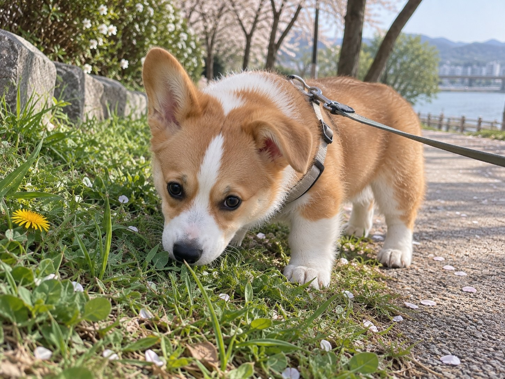
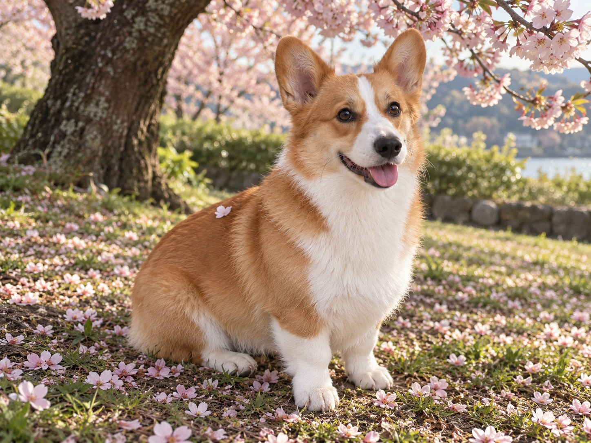
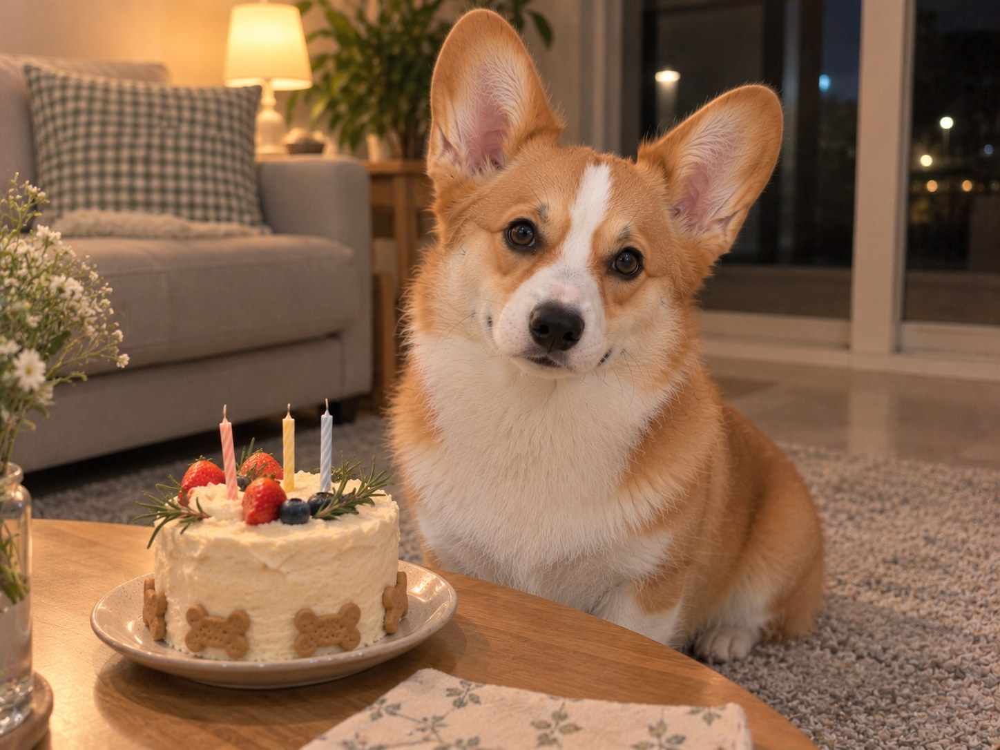
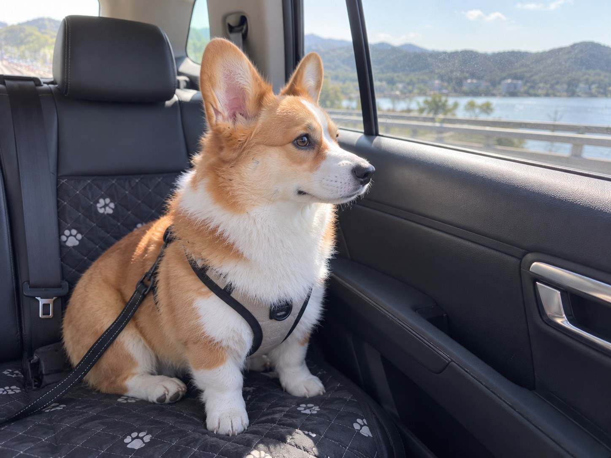
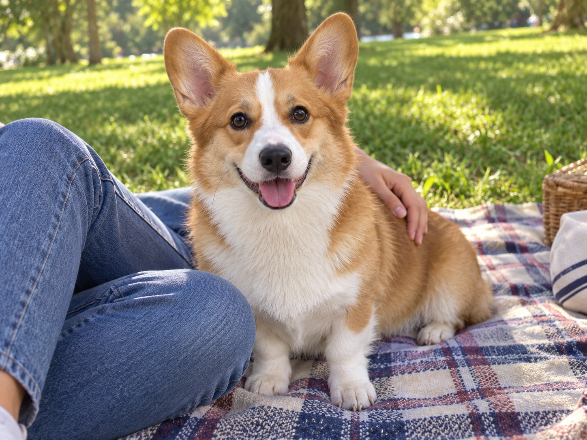
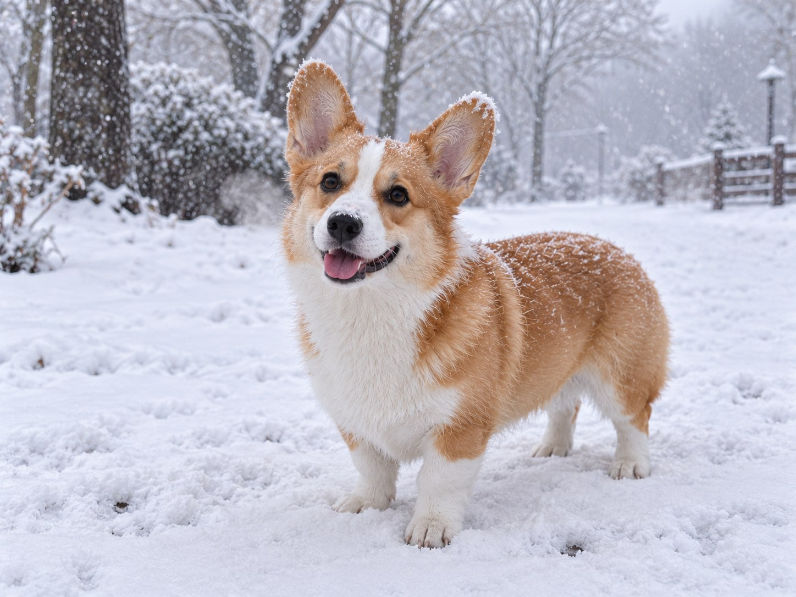
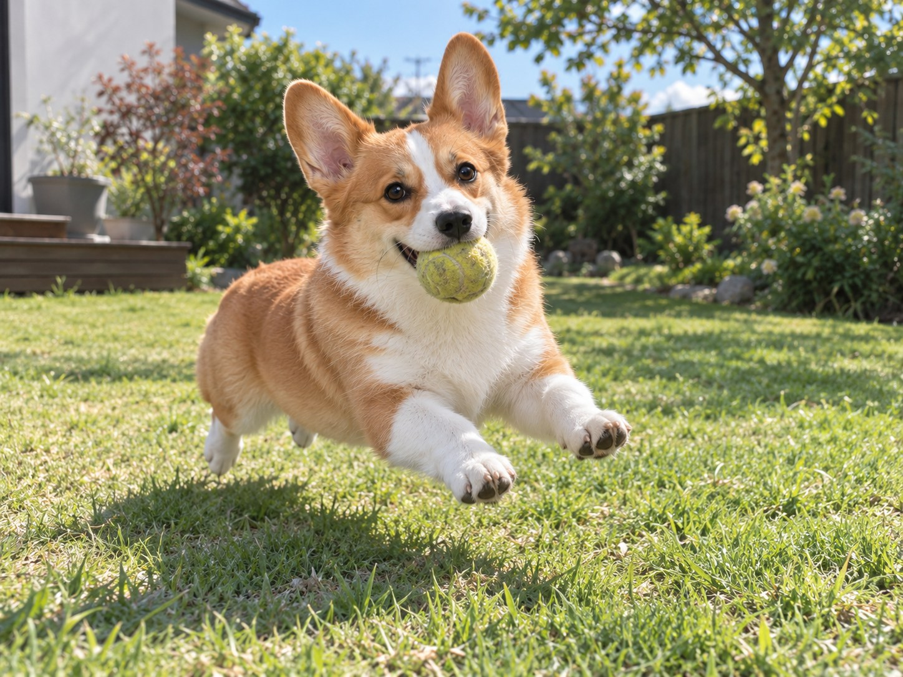
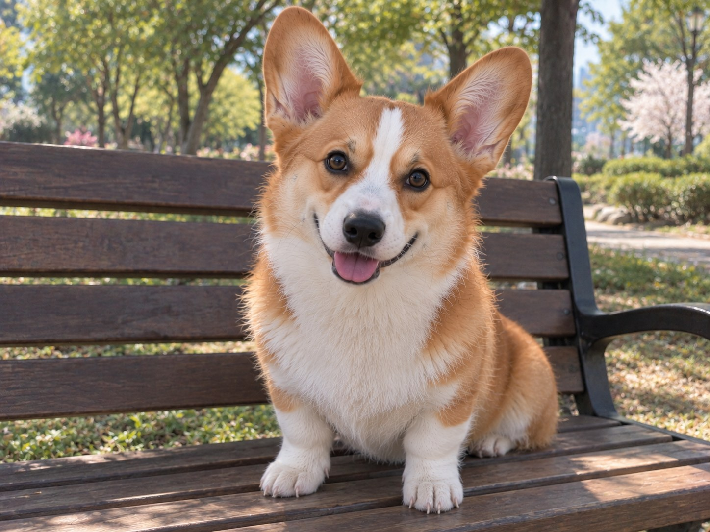

OUR STORY
함께한 시간
해마다 조금씩 자랐고, 그만큼 사진이 쌓였다.
2023
처음 만난 해
손바닥 두 개면 다 담겼다. 귀는 아직 접혀 있었고, 첫날 밤엔 담요 속으로만 파고들었다.




2024
첫 생일이 있던 해
벚꽃 아래에서 한 살이 됐다. 케이크보다 고깔에 더 놀랐고, 물은 무서워하다가 결국 제일 좋아하게 됐다.


2025
어디든 함께 다닌 해
차 시동 소리만 나면 먼저 뒷좌석에 앉아 있었다. 봄에는 돗자리, 가을에는 낙엽, 겨울에는 또 눈.



2026
요즘
이제 우리 집 리듬을 다 안다. 산책 시간도, 간식 시간도, 우리가 언제 앉는지도.



